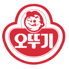
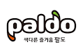

삼양식품
한국 최초의 라면 출시
전중윤 회장은 과거 일본을 방문했을 때
라면을 먹었던 것을 기억해내고
고민끝에 이것이야말로 식량문제를
해결할 수 있는 유일한 길이라고
생각했습니다.
당시, 정부 주무부서인 상공부를 설득하여
어렵게 5만 달러를 빌려 일본 명성식품 ,
묘조로부터 기계와 기술을 도입하여
마침내 1963년 9월 15일 국내 최초로 라면이 출시 되었습니다.
적자가 날 것이라는 임직원의 반대에도
라면 가격을 10원에 출시하여 서민의 배고픔을 덜어주고자 했습니다.
농심
한국을 대표하는 국가대표 라면
1986년 10월에 개발된 농심의 대표 라면 신라면은, 개발 되자 마자 선풍적인 인기를 모으기 시작해 지금까지도 꾸준히 소비자들의 사랑을 받고 있습니다. 하루에 평균 300만개의 판매되고 있으며 우리 나라 라면 시장 중 약 25%를 차지한다. 아울러 국내에서의 인기 못지 않게 일본,미국, 홍콩, 대만, 중국 등 해외 100여개국에서도 그 독특한, 매콤한 맛으로 사랑 받고 있는 제품

오뚜기
착한 기업
오뚜기의 대표 라면은 진라면이다.
맛의 종류로는 순한맛과 매운맛의 두 가지
종류가 있으며, 컵라면 타입으로 진라면큰컵
과 미니컵타입 순한맛과 매운맛 2가지가 더 있다. 순한맛은 노란색 바탕의 봉지에 군청색으로 제품명이 표기되어 있으며, 매운맛은 노란색 바탕의 봉지에 적색으로 제품명이 표기되어 있다. 라면값을 인상, 비정규직 갑질 등의 부정적인 인식이 가득한 기업들 사이 오뚜기는 라면값 동결 및 無 비정규직부터 함태호 회장의 미담까지 합쳐 "착한 기업" 이미지로 칭송받고 있다

팔도
색다른 즐거움
대표작으로 왕뚜껑, 팔도 비빔면, 팔도 도시락, 꼬꼬면, 남자라면이 있다.
용기라면 쪽에 인기 제품이 많다.
편의점이나 할인점 등의 P/B상품 라면 생산을 담당.
GS25의 공화춘 짜장/짬뽕, 틈새라면, 화통라면, CU의 배터질라면,
세븐일레븐의 '라면 땡기는 날엔 이 라면', 롯데마트의 롯데라면,
홈플러스의 홈플러스 라면, 암웨이의 뉴트리 라면같은 주요 P/B 라면은 모두 여기서 생산된 제품들이다.